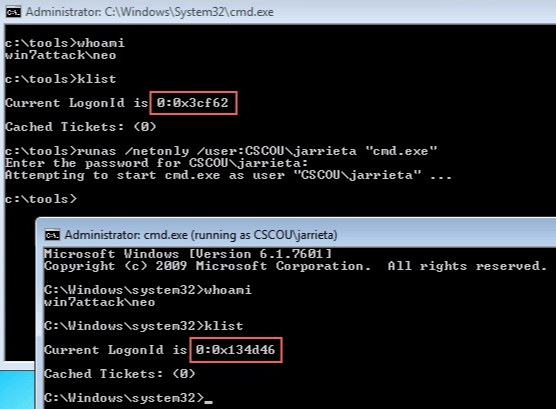

If for some reason you find yourself not on a domain joined computer, you can use RunAs /netonly functionality in order to generate a ticket
This will generate a TGT for the user you invoke "runas" for

In this new command prompt, we don't need to run the net use command to open connections with specified credentials. We can just use normal commands the Windows will use our LogonId with Kerberos authentication:
We can verify that it used Kerberos authentication by running klist again and noting the principal name for the TGT, "jarrieta@cscou.lab":

From this command prompt we are essentially "on the domain" and can start running native Windows commands with the privileges of jarrieta.